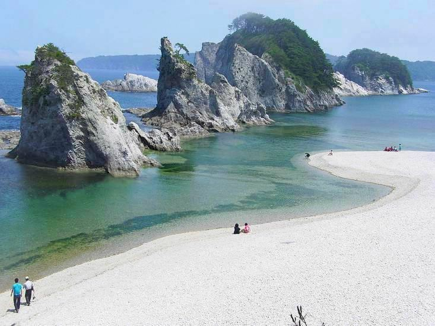
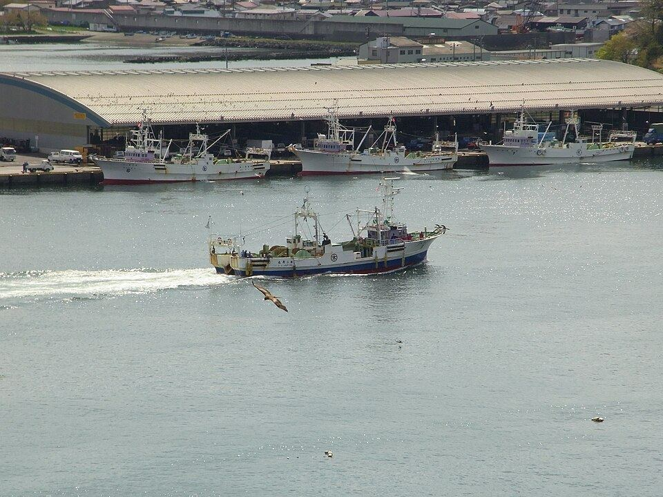
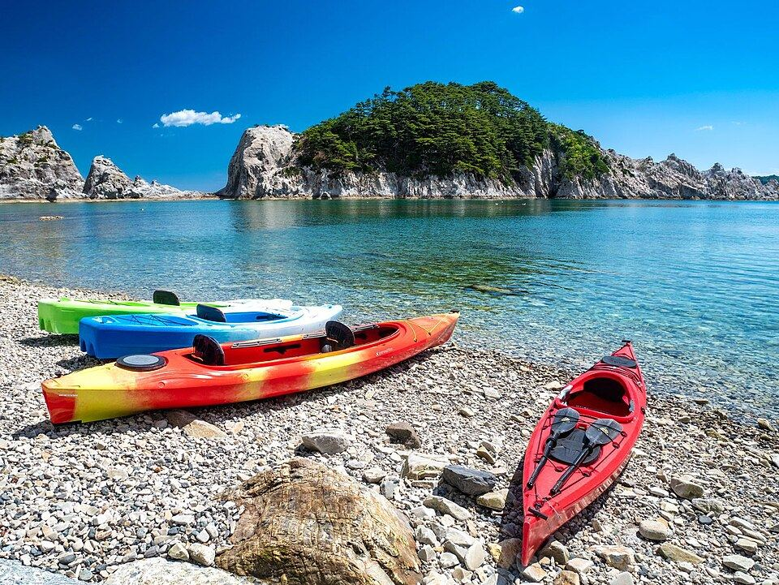
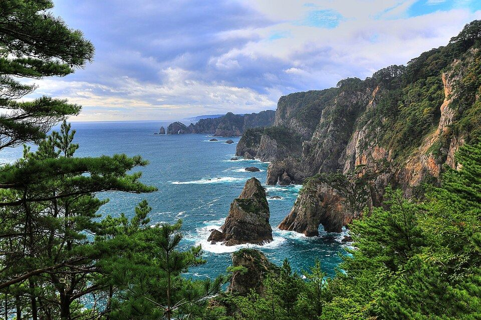
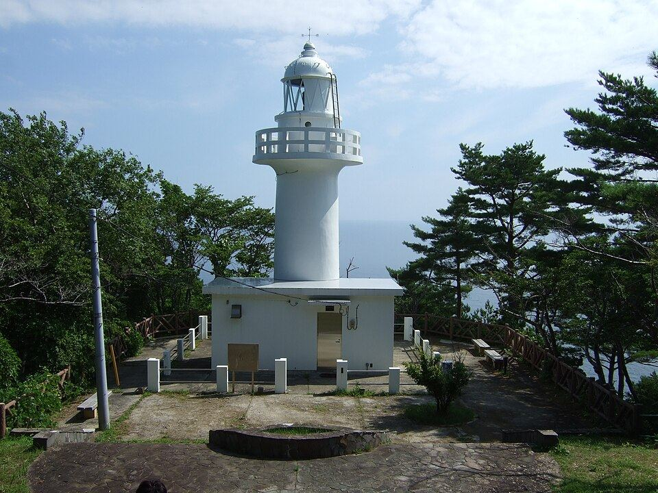
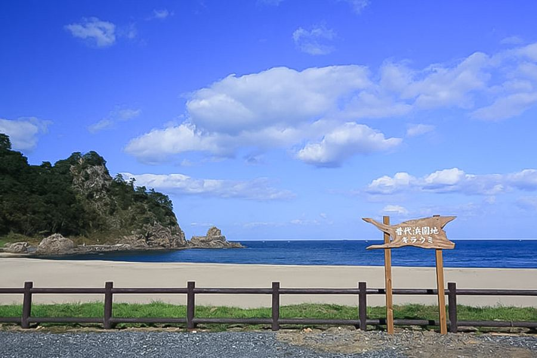
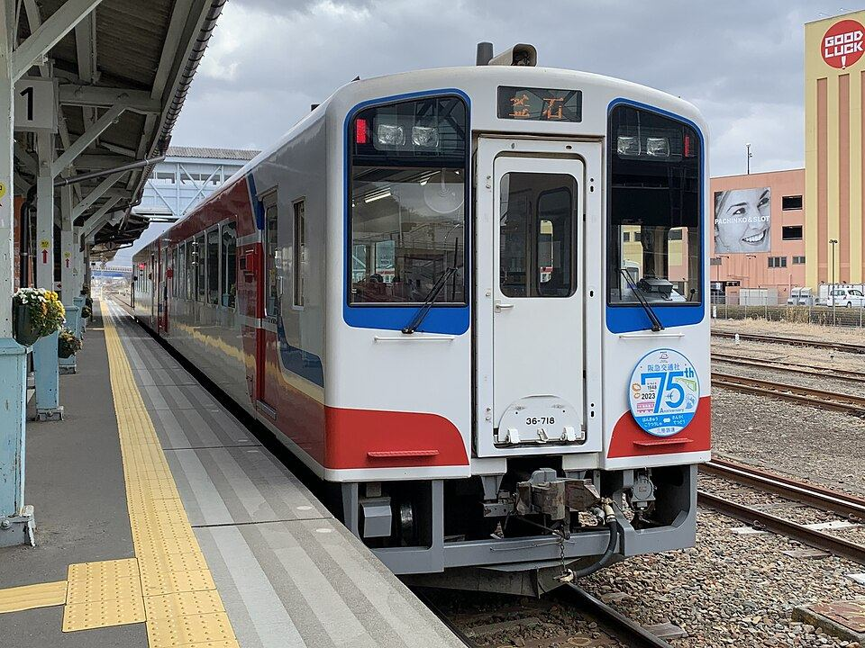
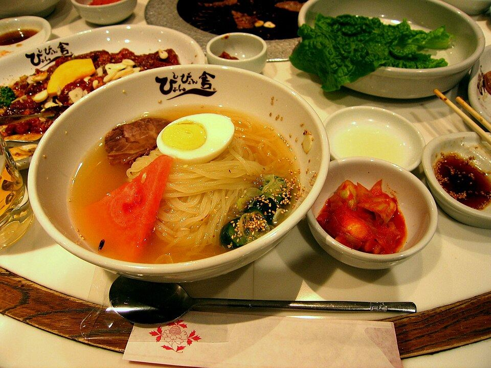

10/16 金 → 10/17 土母さんと達也と 青の国へ

Jyoudogahama.jpg CC BY-SA 3.0母さん・達也・佑樹の3人で、宮古から北へ。
- 日数
- 2日1泊2日
- 断崖
- 200m北山崎
- 北緯
- 40°黒崎
下にスクロールで1日目 → 2日目
16日 ①
盛岡で車に乗って 宮古へ

Japan,Iwate,Miyako city,Fishing harbor.jpg CC BY-SA 4.0新幹線で盛岡に着いたらレンタカー。宮古盛岡横断道路は信号がほぼ無くて、約1時間半で海に出ます。
- 1東京→盛岡 はやぶさ母さんが予約。トクだ値スペシャル28は9/28までに
- 2盛岡駅でレンタカー16日朝〜17日夜。候補は下の「車」の枚で
- 3宮古で達也と合流16日は仕事かもしれないので、合流できたらラッキー
16日 ②
浄土ヶ浜で海の色を見る

浄土ヶ浜の風景20220625-P1390448.jpg CC BY 4.0白い岩と緑の松と、透きとおった青。宮古のいちばんの見せ場。遊覧船「うみねこ丸」も出ています。
- 1駐車場4〜10月は園地内の道路が規制。第1駐車場から歩くかシャトルバス（土日祝）
- 2お昼宮古の魚菜市場か、宮古名物の瓶ドン
- 3所要1時間半くらい
16日 ③
北山崎の断崖を上から

北山崎第一展望台からの北山崎.jpg CC BY-SA 4.0高さ200mの断崖が8kmつづく、三陸海岸の主役。第一展望台までは駐車場からすぐです。
- 1宮古→北山崎三陸沿岸道路で約50分
- 2展望台第一展望台は平ら。第二・第三は階段（無理しない）
- 3風岬は風が強いので上着を1枚
16日 ④
北緯40度の黒崎で夕方

KurosakiToudai2010.jpg CC BY-SA 3.0普代村のシンボル。白い灯台と、太陽光でゆっくり回る地球儀の塔。ここから宿まで車で10分。
- 1北山崎→黒崎約30分
- 2陸中黒埼灯台日本の灯台50選。断崖の上の白い灯台
- 3アンモ浦展望台くろさき荘の裏から262段。海に落ちる滝が見える（元気があれば）
16日 ⑤ 泊まる家
普代B邸にチェックイン

普代B邸（ADDress公式ページ） ADDressの家。商店街の近くの一軒家で、部屋は201。夕飯は歩いて9分の「お食事処いち龍」、お風呂は車12分の「くろさき荘」で日帰り入浴。
- 1チェックイン14:00〜21:00（チェックアウトは翌10:00）
- 2住所〒028-8331 岩手県下閉伊郡普代村宇留部6-8
- 3家守藤本健司さん。近くに住宅があるので夜は静かに
- 4スーパーマルコシ商店（徒歩10分）。朝ごはんの買い出しに
17日 ①
朝は普代の村をひとまわり

三陸鉄道 36-700形.jpg CC BY-SA 4.0村を守った15.5mの普代水門と、三陸鉄道の普代駅。10時にチェックアウトして岩泉へ。
- 1普代水門震災で村の中心部を守った水門。車で5分
- 2普代駅三陸鉄道リアス線。タイミングが合えば列車が見られる
- 310:00チェックアウト。鍵は内鍵と外鍵
17日 ③
盛岡で達也と冷麺

Morioka Reimen.jpg CC BY-SA 3.0岩泉から盛岡まで約1時間40分。達也は17日なら盛岡に来られるとのこと。早めの夕飯を3人で食べて、車を返して新幹線へ。
- 1盛岡冷麺ぴょんぴょん舎 盛岡駅前店（駅から徒歩3分）
- 2じゃじゃ麺白龍（パイロン）本店。〆はチータンタン
- 3返却17日夜。ガソリン満タンで
車
車は2つから選ぶ
16日朝〜17日夜で約36時間。全行程はおよそ310km。
- ガッツレンタカー 盛岡下太田店軽2ドア 2,200円/24h〜。コンパクト 4,070円/24h〜。24hで300km制限（超過11円/km）。盛岡駅から車で15分。9:30〜18:30。TEL 019-656-6378予約 →
- 駅レンタカー 盛岡駅駅直結で楽。値段はガッツより高い。新幹線とセットの割引あり予約 →
ガッツは安いが店が駅から離れていて、返却が18:30まで。17日夜の新幹線に合わせるなら駅レンタカーの方が確実。
準備
持ちもの
- 上着岬と洞窟は10月でも冷える
- 歩きやすい靴展望台・262段・洞内の階段
- 日帰り入浴セットくろさき荘。タオルは持参
- 新幹線の予約母さん。9/28までに
- 免許証運転する人
- 朝ごはん前日にマルコシ商店で買っておく
分担
- 母さん新幹線の予約（東京⇄盛岡）
- 佑樹宿（申請済み・承認待ち）とレンタカー
- 達也宮古の案内と17日の盛岡合流
おわり
それでは 10月16日に
このページは家族だけのもの。予定が変わったら佑樹に言ってくれれば直します。
写真: Wikimedia Commons（各撮影者・CC BY / CC BY-SA）とADDress公式ページより。営業時間・料金は2026年9月時点の各公式サイト。